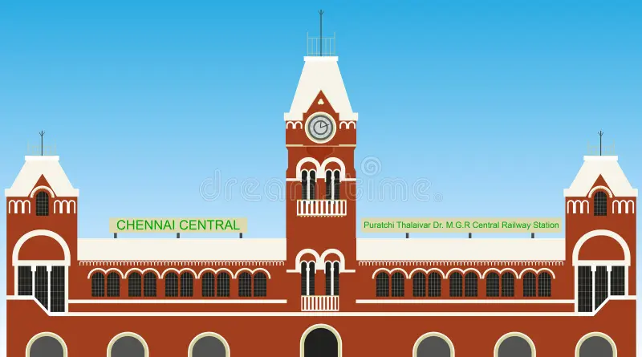
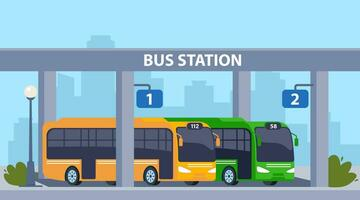
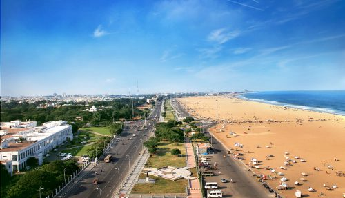

Welcome Home
Village to City aims to bridge the gap between rural life and urban
opportunities. Discover information to help navigate the transition,
access services, and stay connected with both villages and cities.
Explore how you can adapt, grow, and thrive by leveraging what both
worlds have to offer.

Transport
Moving from a village to a city often means navigating new
transportation systems. Cities provide a variety of public transport
options such as buses, trains, and metro services. These are usually
linked through apps and real-time trackers, helping residents plan
their commutes efficiently. For late arrivals or emergencies,
ride-hailing services like taxis and auto-rickshaws are available,
making travel convenient and safe. Villages may rely more on buses,
shared vans, and bicycles, often requiring a bit more planning for
longer journeys.

Place
Cities offer countless places for education, work, shopping, and
recreation. Neighborhoods are often organized by convenience, with
markets, schools, and parks within reach. Villages can be quieter and
more closely-knit, where places like community halls, temples, and
weekly markets form the social hub. The city’s diversity means
discovering new restaurants, entertainment venues, and cul tural
institutions each time you explore.
Apps
Mobile and web applications play a key role in city life, making daily
tasks simpler. From transport apps that track buses and trains, to
delivery apps for groceries and medicines, technology brings
convenience to your fingertips. Information apps provide local news,
government schemes, and emergency updates, while learning apps foster
education and career development. In villages, apps can help connect
citizens with government services and new opportunities for growth.